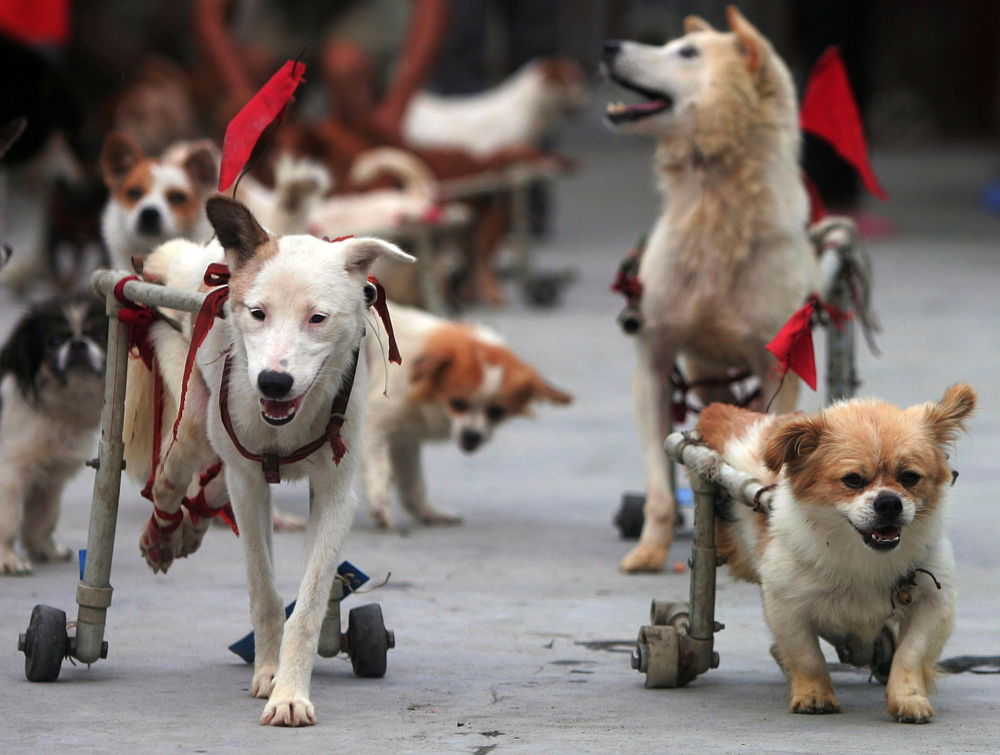

Animal shelters are important to communities because they rescue stray animals before they hurt themselves, hurt others, or never find their homes. Animal shelters also provide education, information and assistance for the people in the communities. Animal Rescue Organizations are usually private and run by animal advocates and volunteers who want to find homes for all animals that come through the organization while avoiding euthanization. Animal Rescues will not euthanize an animal to make cage space but may need to in the event of severe medical problems or uncontrollable behavioral issues. While they are a great alternative to shelters, these humane rescues are usually very small and are funded mostly by grants and donations.
There are three main types of shelters. The first is open admission shelters otherwise known as high-kill shelters. These shelters accept all animals regardless of age, size, health, and behavior. These shelters are the most common shelters and help get the most pets to the most families, but at the same time since the open shelters receive so many pets they have to euthanize many due to health and behavior issues as to not have any health problems spread through the shelter and to keep available cage space for more animals. While open shelters always provide an option for a homeless pet, they are often over crowded, poorly run, and may put down a dog that would not normally be aggressive but is only fearful because of its environment.

The second type of Animal shelter is a limited admission shelter, otherwise known as a low kill shelter. The main difference between an open admission shelter and a limited admission shelter, is that limited admission shelters will not euthanize an animal depending on length of their stay or available cage space. Most limited admission shelters require an appointment to be made prior to giving up your pet to ensure that there is available cage space; they will sometimes even have a waiting list for cage space to ensure that the animal will be accepted at a time that the shelter can house them. Limited admission shelters will only euthanize pets for severe medical conditions or behavioral problems. Most limited admission shelters have intake interviews prior to releasing your pet to build an accurate description of your pet’s real personality rather than how they act in a stressful environment.

The third type of shelter is a no kill shelter, which also have a very limited admission. No kill shelters usually do not accept animals without an appointment and thorough screening process. These shelters tend to be very selective with the animals they accept and will refuse animals over a certain age, with severe medical issues, or with behavioral issues. No kill shelters are generally only looking for immediately adoptable pets, which is both a good and bad thing. A positive aspect of these shelter is that a large percentage of all the animals that come through them are adopted and go to permanent homes, but at the same time they have substantially fewer animals come through them than other types of shelters.